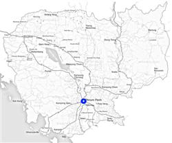
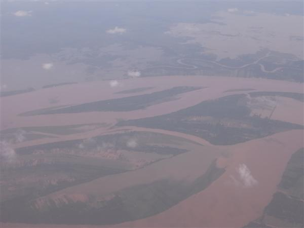
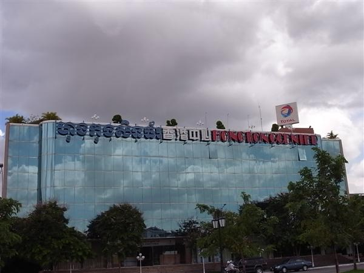
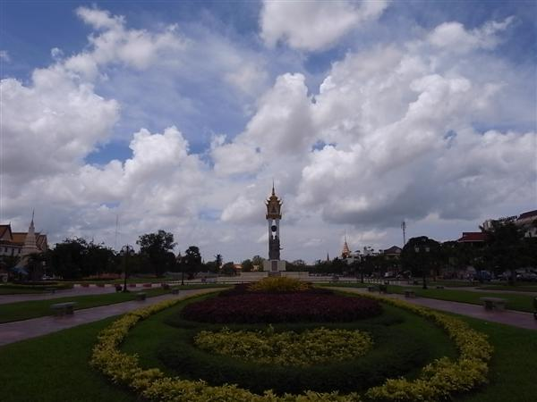
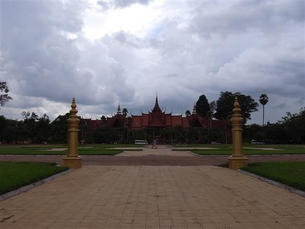
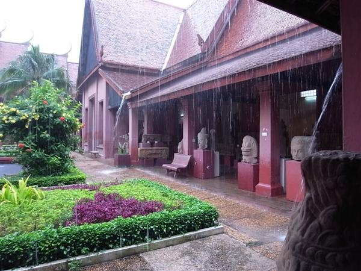
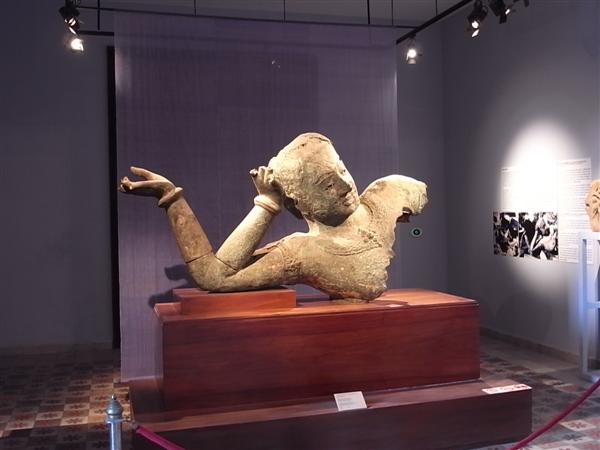
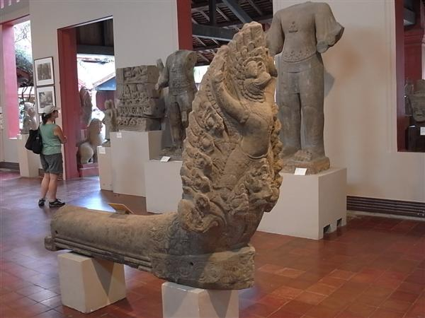
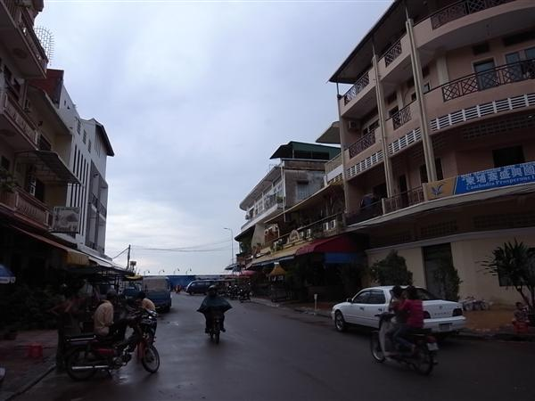
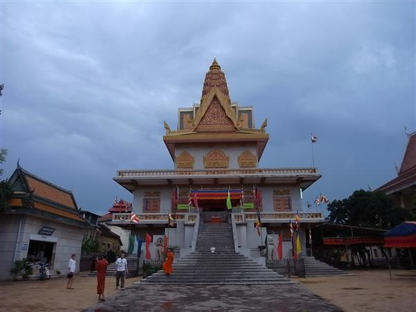
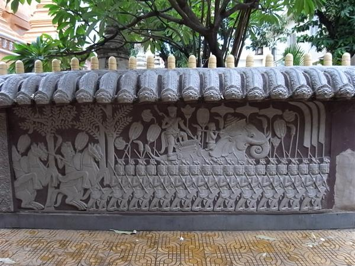
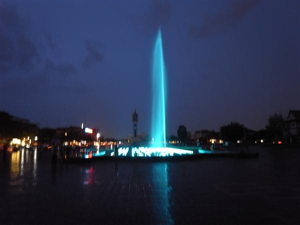
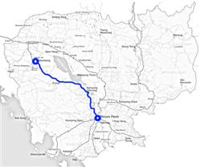
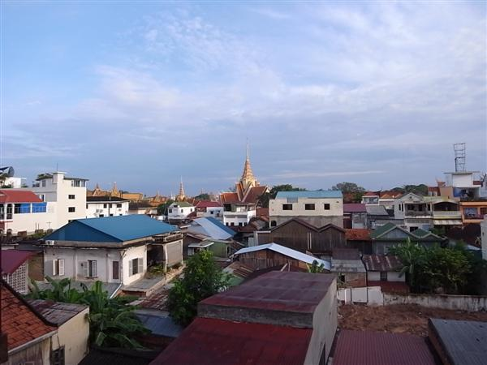
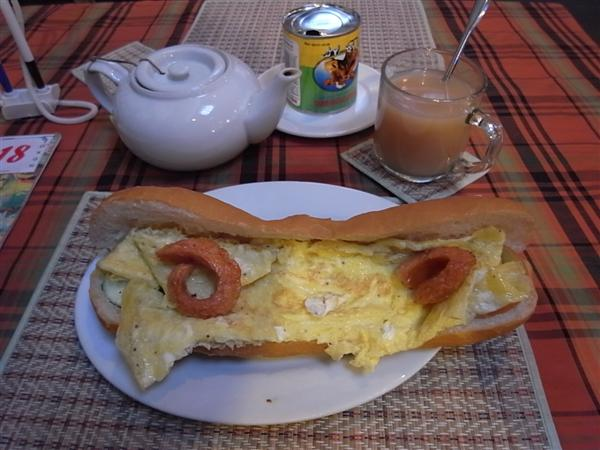
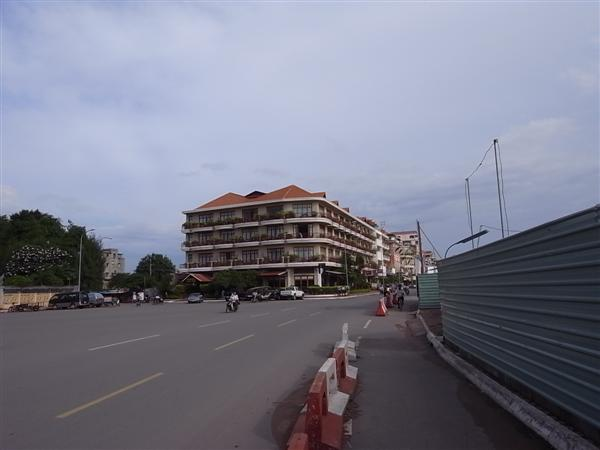
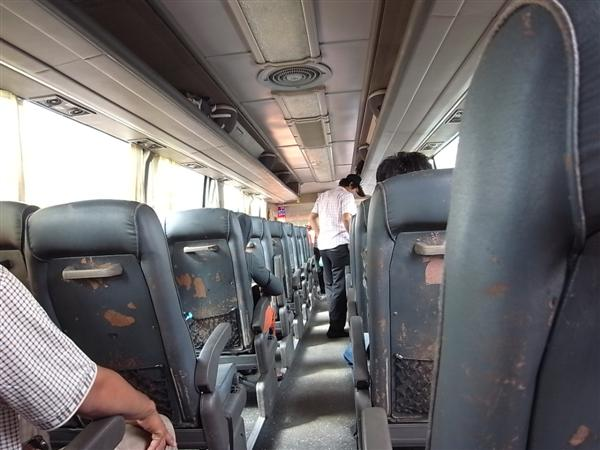
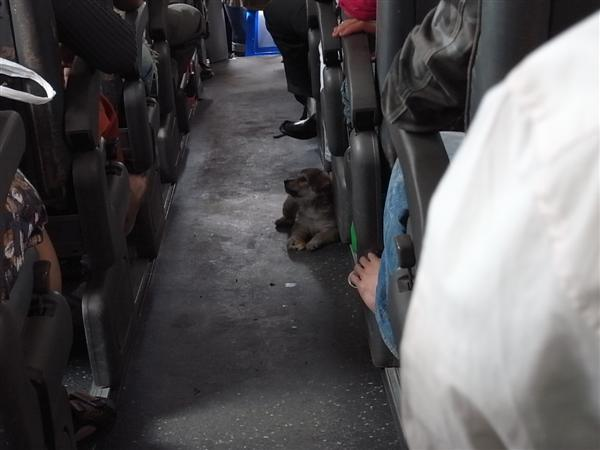
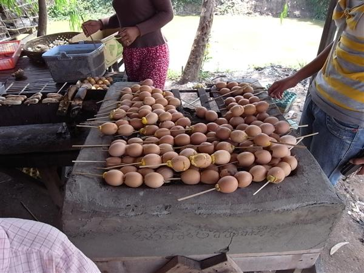
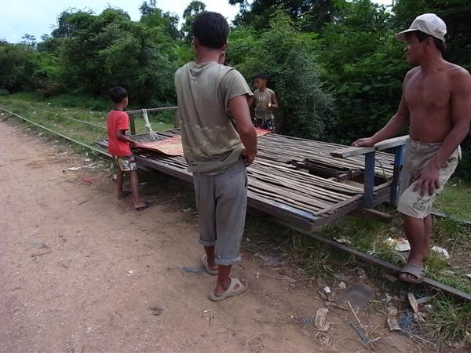
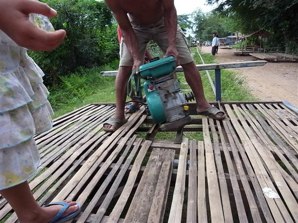
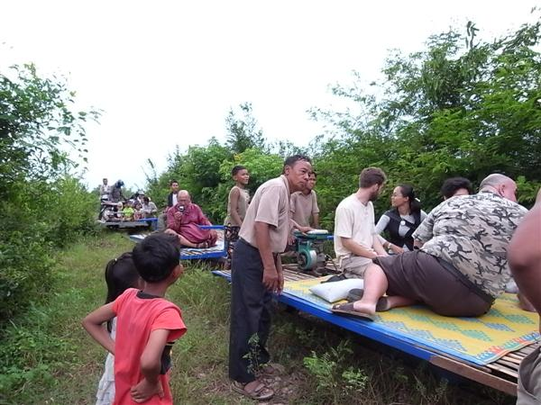
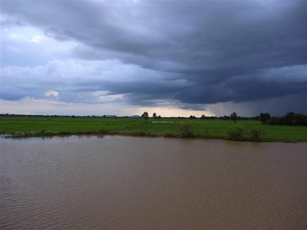
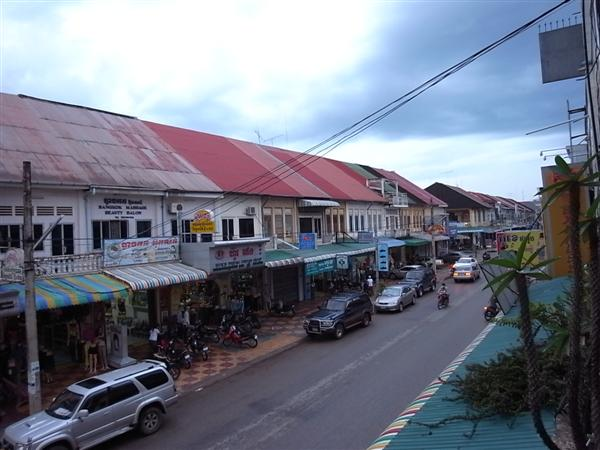
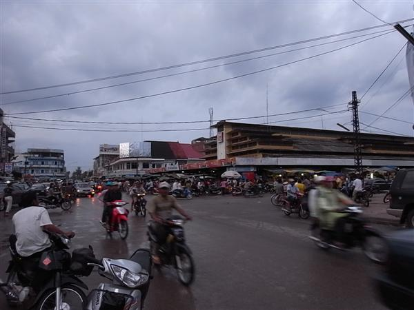
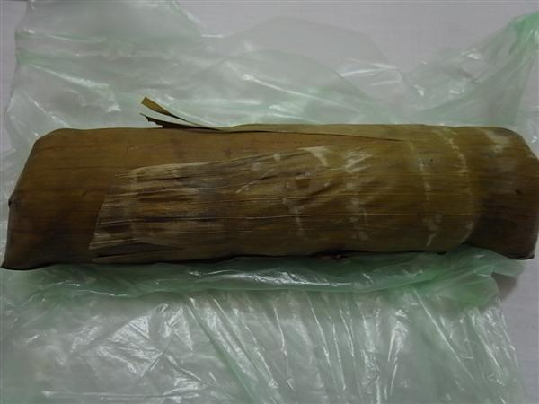
2008-09-29 Battambang
Wat Phiphetaram, Battambang City, Wat Ek Phnom
早餐又是隨蛋附送法包一條，以及煉奶啡。
臨走出旅館時，有個司機向我說，Muly 今天 busy，托他載我。不是吧，我不信，有排都未夠鐘，到時不見他才算吧。
上午逛逛這個鎮。走進一個神廟 Wat Phiphetaram，有很多人聚集，有些人手持相機。雖然是熱鬧，但又不感到有節日氣氛。
走到河邊，有很多古時法國統治間的建築。然後走去博物館和郵局，但兩樣都關門了。附近的廟 Wat Damrey Sar，一進入，果然多人，人們一家人去拜祭先人，拍照，玩樂。看見人們的祭品，有我昨晚買的粽。
鎮內有個火車站，但已荒廢。我喜歡火車遊，不過柬埔寨好像沒得乘火車。走回旅館，吃了個粽，喝杯鮮橙汁，聞說 Battambang
的橙汁是全國最好的，但覺得還是不太好喝。
昨天覺得 Muly 幾好人，然後又看 LP 有什麼好遊，心想不如明天留多一天，反正我想去博物館和郵局。向 Mudy
說，他很開心，因為他們很少有客。他說明天可以去哪裏和哪裏。未去過的我也有點期待。
今天便去北面的 Wat Ek Phnom。廟的門口旁邊，有座很高很大的佛像。Wat Ek Phnom
前面有座新一點的廟，後面才是古蹟。外國人要付兩美元才可以進去。
很口喝，進去前先在路邊檔喝杯蔗汁。柬埔寨以前的廟受印度教影響深遠，而且都是多數信奉印度三神，以前的王都認為自己是其中的化身，然後為自己興建一座神廟。所以經過多代國王，多處都是不同的神廟，包括人們最喜歡的
Angkor Wat。
它們外形和印度的神廟也像，我看見很喜歡，不過它們原本擺放 Vishnu、Brahma 或 Shiva
的神像或代表物，卻因之後改信佛教而全用佛像取代了。先入為主，我看見總是覺得格格不入。
現在這個 Wat Ek Phnom 一樣。它是古蹟的同時，仍然開放給人使用，今天這裏的主神殿香火不絕。參觀完，Muly
和我進入前面那較新的神廟，神廟內的牆和天花，全是圖畫，描繪一些佛的故事。
Muly 為我講解。這裏的佛教和我認識的也很不同，那些事蹟，還留有印度教的色彩，我最有興趣關於 Naga (蛇神) 的事，有 Naga 為 Buddha
擋雨，Buddha 弟子化身 Naga 大戰 Naga。
很有趣，好像看印度教和佛教的「外傳」似的，但很混亂，人物和關係很多，頭都暈。
之後我請 Muly 喝 coconut，我很喜歡喝，差不多每天也想喝一喝。
離開 Wat Ek
Phnom，到河邊一些村落的小屋看人們如何造鼓、米酒、種菌，不過因為今天是節日，人們都休息一天，只看到些工具，過程就看不到。在一間製竹筒飯的屋買了支竹筒飯吃，很好味。
回市鎮之前，Muly 帶我去我沒想過現在就會去的地方，是當地的 Killing Fields，但他沒有帶我去看那些坑，只帶我去附近的 stupa，內裏安放了被
Khmer Rouge（赤柬）殺害的人的骨。
Stupa 的周圍是浮雕，雕了 Khmer Rouge 在 Battambang
的惡行，當中一幅人們排隊離開城市「下鄉」的景象，還能看見那時候的市場，和現在的一樣。
Muly 說了關於他和家人在這期間的故事，如何行到 Pursat，他的嫂要在途中生產，後又行回 Battambang。我知道 Khmer Rouge
如何對付嬰兒和老弱的人，我不敢問他的家人的下場。
其實我沒有要求他說這些東西給我聽，但不知為何他說我好像喜歡聽這些事，他說明天繼續說。不過我其實也真的很想知。有關的事，我只看過電影《The Killing
Fields》。
回到城市，不夠五點，已有些燒烤檔在市場擺賣，我找尋有沒有某些地區才有的燒蜘蛛，但沒有。
到河的東岸行，沿途有很多很多的青年摩托車黨，三五成群向某個方向進發，應該是因為節日出來聚，行了不久，遠處聚集了大班人，在跳
aerobics，附近又有人表演跳刀圈，不過我等了很久他也不跳我便走了。
天就來全黑了，趕快行回旅館。過橋到西岸後不久，聽到曾經聽過的「啪」一大聲。涼了一涼，真的又有車禍了，又是 moto，有人躺了在一輛汽車的底，有人急救，但好像沒有反應，然後人們抬他到路邊。
已經第二次了，心情也差了，我實在不想再看到更多。回旅館的餐廳吃晚餐，叫了炒飯和 fruit
shake，全餐廳只得我一個客人。個侍應小女孩好像我打擾了她般，十分悔氣，等了很久，看見她到了對面店「鋸」了些冰回來。我終於知道為何昨天杯 shake
這麼久了，原來要即時買冰。
晚上，外面下大雨。
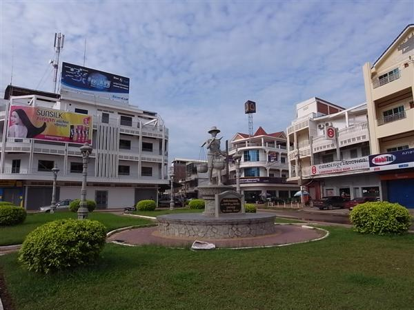
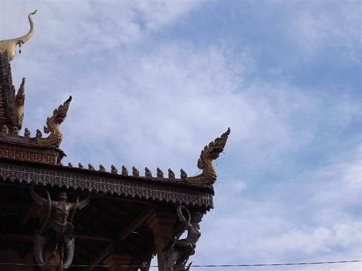
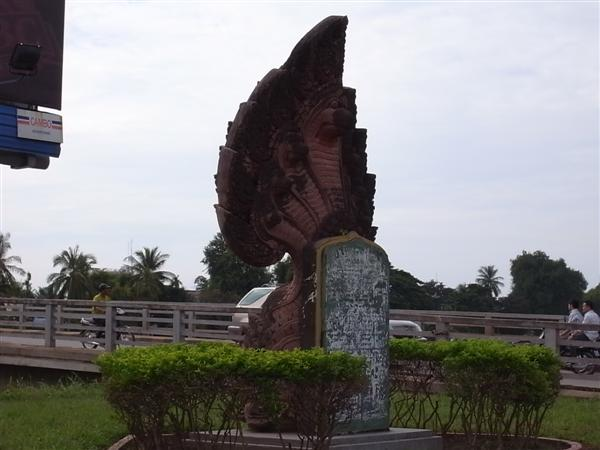
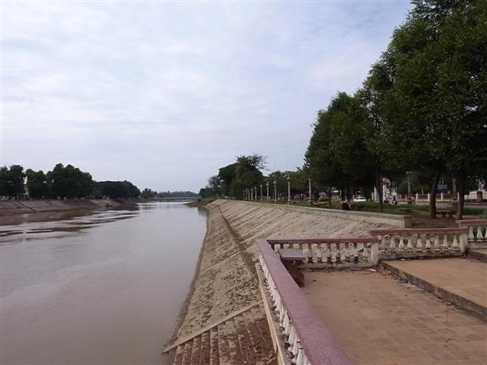
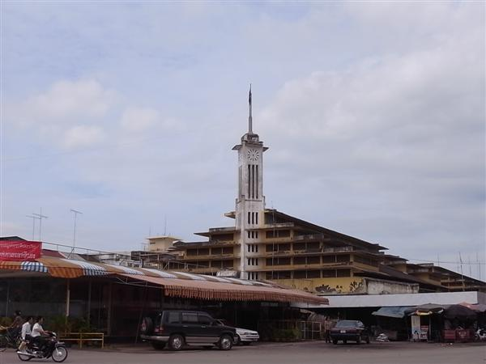
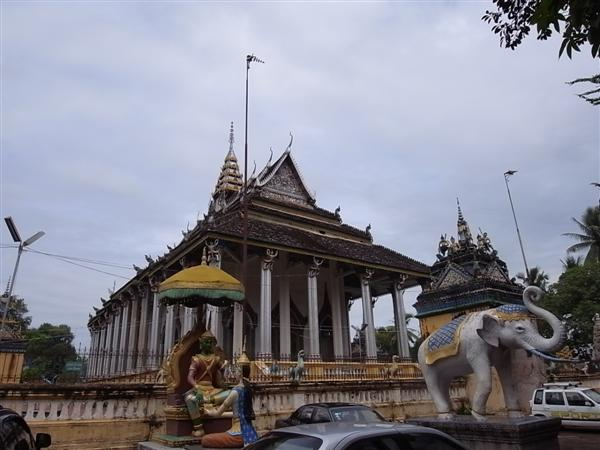
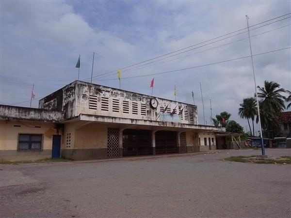
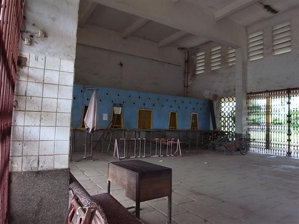
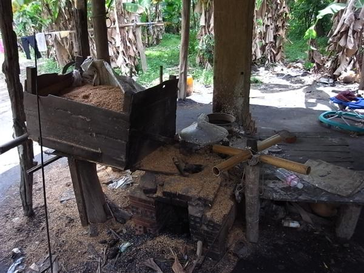
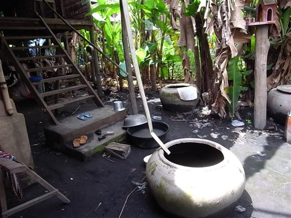
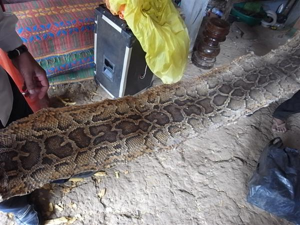
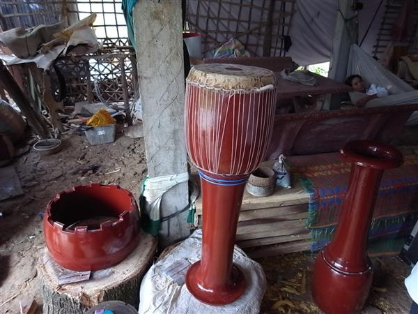
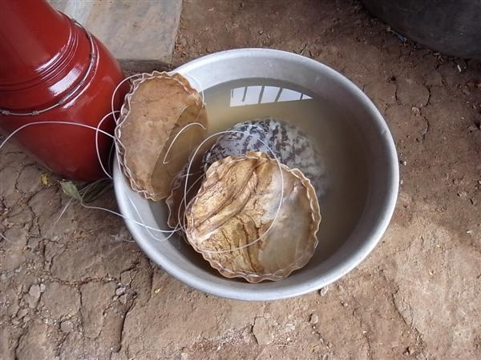
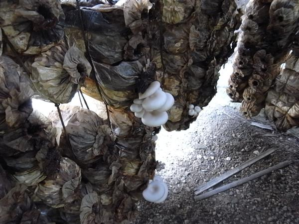
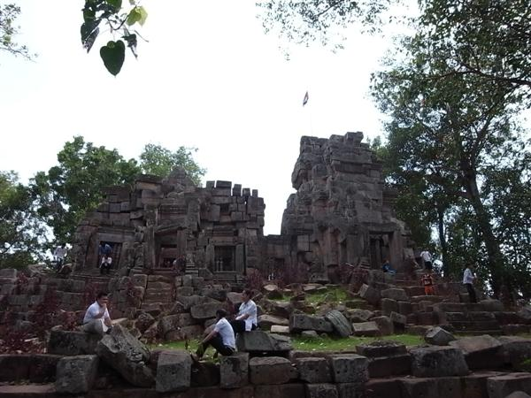
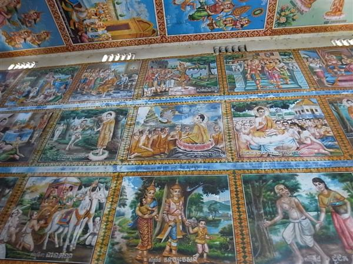
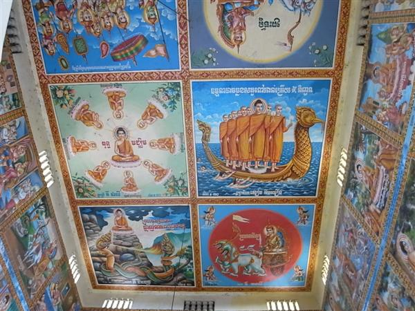
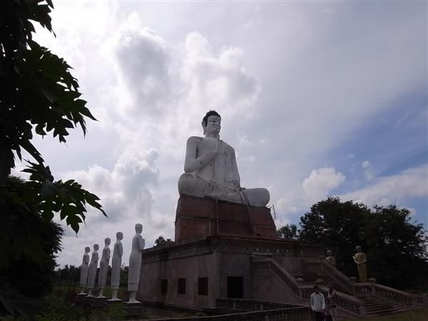
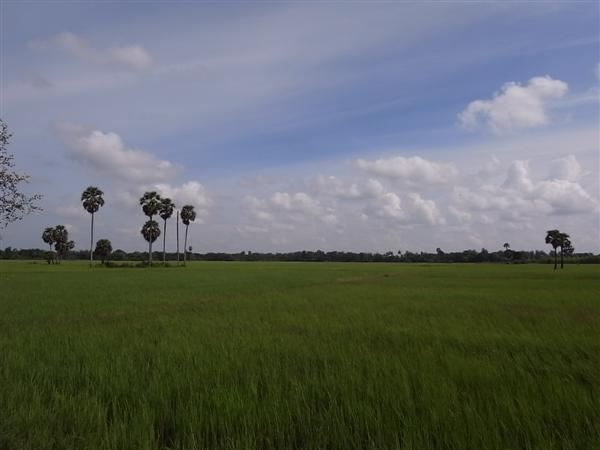
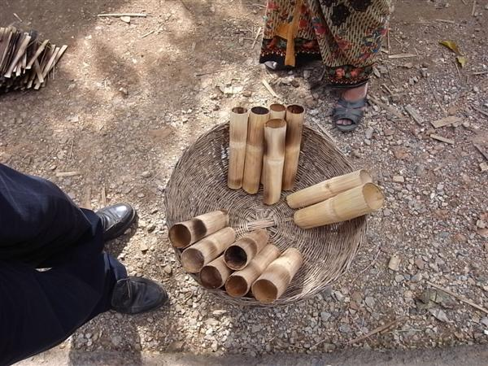
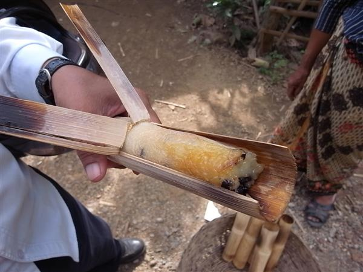
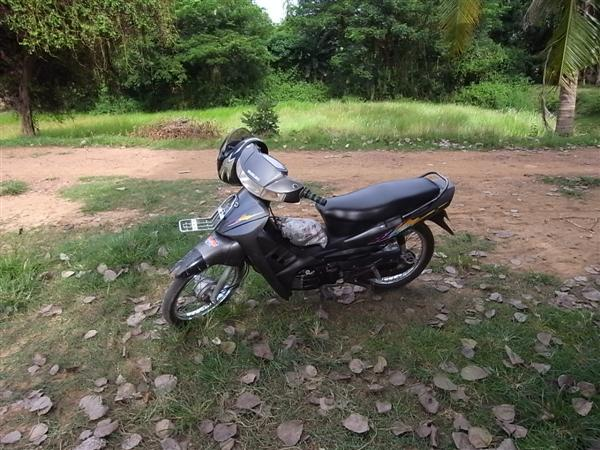
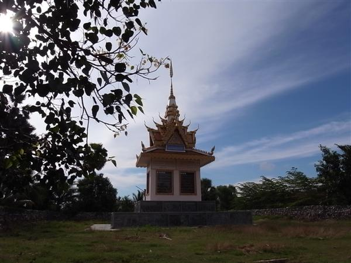
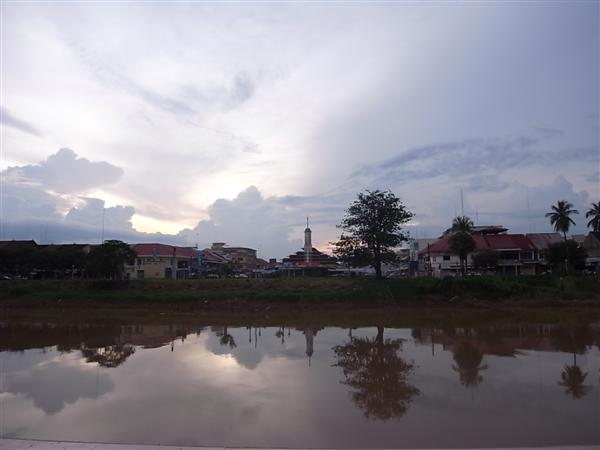
areobics
2008-09-30 Battambang
Phnom Sampeau, Phnom Banan
睡飽，早餐除了到樓下餐廳也不知那裏才有得吃，小妺妹態度仍然很有性格地差。博物館和郵局仍然關門大吉。昨天熱鬧的神廟，十分冷清。街道上有很多積水。
郵局以南的地方，有一個遊樂場，有摩天輪，好像仍在興建中。附近有一個很大的 Naga 像，是戰時用過的武器砌成。
博物館沒開，多出的時間用來逛東岸，發覺東岸的有些頗高級的酒店和食店。
約了 Muly 十時，但十時未見他。旅館老闆說他 busy，叫我找另一個司機。不會吧，明明約好了。我很猶疑，有個司機問我去哪裏，我說我想等 Muly，但他打手電給
Muly，說他 busy，還給我聽電話，其實電話的回應只是平常我們收到的「未能接通」錄音。
我不知如何好，因為我其實想 Muly 載我。我說我等多十分鐘吧。這時我順便在這裏買明天早上去 Siem Reap
的船票，老闆問我去多少天，可以介紹旅館，我說六七天吧，他有點愕然，我說因為想看看有沒有團去 Prasat Preah Vihear。
他們都不會這麼長氣，只叫 Preah Vihear。老闆說有的，他抄下我的名字，說我在 Siem Reap
下船便有人接我，然後帶我到旅館，若我去到不喜歡也沒問題，又說那個司機會告訴我怎去 Preah Vihear。
這時，Muly 終於出現了，老闆向我說：「I told you he is a bad driver, but you don't believe.」o下...？老闆罵他遲到。臨出門時，門口的一個司機向搖頭我說：Bad。
點 Jack！！使唔使呀大佬！我係咪要換司機呀咁？都出去啦！點喎？不過我是不會理會他們的，我不覺得 Muly 很差，只是今天遲到了而已。
騎上車，去 Phnom Sampeau 的途中，Muly
沒出過聲，我找些東西說，說今天的廟很清靜，才開始說話。今天的路，差不多全是泥路，昨晚的雨水令到這些路很難行，我把斜揹袋放在車上，免得泥水濺到。
Phnom 是山的意思，到了 Phnom Sampeau 的山腳，向 tourist police
購票，我想起昨天的沒有給我票，都不知是否自己收了錢算。今天這個警察很友善。
Muly 帶我上山，不是行樓梯，而是行另一條斜路，比較舒服。在途中，他帶我到 Killing Caves，這裏有兩個洞，以前 Khmer Rouge
把人攻擊後腦之後推下這些山坑，和 Killing fields 一樣，之後藏著很多骨。現在這裏有個佛像，安詳地躺著。
洞穴附近也有一座大佛，我問 Muly 他是不是信這個，他說是，然後說給我聽這佛像的手勢，那舉起的八隻手指，是指脫離受苦的八個方法。是什麼呢？Think
right; Do right; Meditation right ... 還有呢？忘了。好像是 try to do
right。咁都算？其他的他說不出了，不過算了吧。
上到山頂，有很多人，Muly
入去一座應該是主殿的建築和其他人一起跪著。我就在外面自己逛逛。其實沒什麼好看，很快就想下山。山腳有座還未雕鑿完的高大佛像，但好像停工了。
好鬼熱，我們喝可口可樂，他問我香港的可口可樂味道是不是一樣的，我說是一樣的。
然後是到更遠的 Phnom Banan。沿路的風景很美，全都是些田。突然，吹來一陣很涼快的風，遠處的天有點暗，Muly 說就來下雨。
從遠處便能看到 Phnom Banan 上的幾個廟，都幾好看，有點像 Angkor Wat
中塔廟的外形。要行一條頗長的石梯上去，不過神廟已很破舊，只剩下少少雕刻依稀看到。
下雨了，躲在樹下暫避，很好運，不久又停雨。看見一些當地少年，行去一條山路，應該就是書中說的通往幾個石洞的路，不過沒時間，還是沒有跟他們去。
下山後吃點東西，Muly 繼續說些歷史，說到 Khmer Rouge 的 Pol Pot，我說我們也有個毛澤東呢，他說 Khmer Rouge
也從他處學來，只是變得更加恐怖。
回去了，途中他載我去看什麼鳥，原來是蝙蝠，不過是日光白白活動的蝙蝠。又經過些路旁的村落，突然爆呔。剛好就在一間修理摩托車的屋附近爆。
看見他們修補輪胎都幾有趣，先剪幾塊特別的膠，放在穿了的口上，然後用個燒著了的罐夾著，等了一會，便用得。不過只是頂住先，Muly
說回到去要買新的，要十五美元一條胎，苦笑說今天沒錢賺。
回到市中心，又周圍逛，發覺多了遊客。發現市場斜對面有間食店，叫 coffee & snacks，內有 Battambang
衛星地圖一張掛著，一個客人都沒有，但菜式不錯，價錢又比 Gecko 便宜，老闆更很親切，叫了個咖哩，很好吃。如果早點發現這家店便好了，但這餐已經是我在
Battambang 的最後一餐。
由戰時用過的武器砌成的 Naga
常見的圍欄
Phnom Sampeau
killing cave
Phnom Banan
沙律，很辣
補胎
2008-10-01 Battambang → Siem Reap
Tonle Sap Lake, Phnom Bakheng
去 Siem Reap 的船早上七時開出，所以早點起床，執好行李，在對面餅店買了個蛋糕。旅館老闆開車載我去碼頭，同車的還有三位遊客。
船上坐在旁的是美國人
Scott，他說他到過香港，但在重慶大廈住過一晚便搬去其他旅館，他覺得重慶大廈很恐怖，有些像買賣毒品的人、娼妓，應該拆掉它。我心想又不好吧...。
河邊的風光很好看，不時有些人向我們揮手，又見到一些浮在水上的屋。船不時鳴笛，然後慢駛，不久便有小船由河邊划來，原來是上落客。
船駛得好慢，我走上船頂，船頂已有幾個人坐著，船開始離開河道，進入一大片澤地。周圍都一堆堆是水浸了或浮起的植物，船駛得更慢，好像很小心地選擇道路似的。
但這裏的風景好美，可能就是進入了 Prek Toal Bird Sanctuary 的範圍。
繞過很多的植物之後，船駛入一條很窄的通道，兩旁的樹枝有時打落船身，我見 Scott
也上船頂，他說下面關了窗簾。落了窗簾，應該就是防止之後的事情發生了，一些很長的樹枝掃過船身和船頂，我們都要玩躲避，若說柬埔寨有什麼好玩，我覺得這也很好玩。
但更好玩的在後頭，樹枝掃過後，我們身上、船頂上、袋上，都多了些昆蟲，最多是蟻，還要是紅色幾大隻那種，咬到飛起，不斷拍打個身。
過了這條通道，進入了一條我想也算是浮村的村子。船停在一間餐館前，乘客下船買食物，我和幾個人買了些魚和飯和蛋坐在屋內吃。
當中有一男一女，住在印度的
Goa，男的是法國人，女的我估是印度人，他們說印度現在變了很多，尤其是南印度，而且是壞的轉變，很多地方的發展太急，一些不同的地方的人變得很不同，不融洽。
這餐很好吃，又有罐裝凍啡喝。吃飽上船繼續，很多人都下去坐了，我在船頂暴曬了不知多久，也覺得夠，回到船鎗坐下。
船又再進入一些很多植物的地帶，不久，這些植物越來越少，前面好像大海一樣，我們在 Tonle Sap 湖了。
船駛得快了，但也用了很多時間，才再經過水浸了的樹林，然後見到些浮屋，在 Chong Kneas 泊岸，我已見到有人舉著我的名字的牌在等。
這時已是下午三時，想不到，已過了八小時。司機叫 Lai，他載我途中，例牌問我這幾天如何，我說我打算租單車遊 Angkor
古蹟，他說太遠了叫我坐他的車，我說我要想想。
他帶我到 Bequest Angkor
Hotel，很不錯，最重要是花灑水力足，才十美元一晚，房間大，又有電視雪櫃有檯有椅有衣架有拖鞋有肥皂有洗頭水有牙膏牙刷還要有廁紙！
登記好，約了 Lai 一會兒去 Bakheng（巴肯山）看日落。一個多小時空檔，行到郵局，寄明信片，這郵局某阿嬸賣給遊客的，都是五美元一包可以寄五張明信片的郵票，每張明信片只用
2200R (這時大概 USD 1 換 4000R)，五美元買 11000R 的郵票，佢都得。我問為何這樣，個阿嬸只顧說 Five Dollars！
沒法，但我要寄多一張，沒理由買多五元吧，結果買多張 2200R 的。（那麼為什麼剛才她不給我五張 2200R？fo_o，不過我覺得五元一包的郵票似乎較精美）
剛才問 Lai 如何去 Preah Vihear，他說沒公車去的，要包車去，很貴的，而且不是很多司機肯去那裏。又說我不能去，因為有
fighting。我不信，但在這裏都不知可以如何問人。
經過一間好像幾高級的酒店 Ta Prohm Hotel，心想他們或者有去 Preah Vihear 的資料，怎料那些人連我指著的旅遊書看都不看，就叫我去第度問。
剛到步，都不知可以到哪裏問，Ta Prohm Hotel 對面的屋貼著 Tourist Information，但永世關門的。
Lai 載我到 Angkor 古蹟群的入口購票，五時後可以買明天才開始計的票，還可以現在進入。
在 Bakheng 山腳，買個 coconut 喝，個店員坐下和我聊天，都是些從哪裏來的東東，我順便拿出旅遊書問她，是不是不能去 Preah Vihear，她說可以，遊客沒問題，我的心即刻安樂點。
臨上山，有些人在入口處賣書，有個女子拿些書問我買不買，我見到有本《Anicent
Angkor》，印得很精美，好像正版似的，我問多少錢，她說就是背面那個價，廿多美元，太貴了，不要。廿元給你，不要，十五元，嗯..還是不要，十元，好像很抵買，再看多看，每個古蹟都有頗詳細的講解，很吸引，便買了。
跟著人們上山，很快就到山頂，山頂有座神廟，多人到爆，上到去，全都是人，影乜鬼日落，全都是人頭。不過其實，天色不好，日落都被一層不知是什麼的東西蓋過。
不過對於看不看得到日出日落，我不是很有所謂的，天就黑，便跟著人們下山回去，Lai
問我明天如何，我想過，也覺得很遠，而且我很累，所以我也答應包車算了。他又說他問過人，說我不能去 Preah Vihear。點呀又？我沒理他。
在 La Noria Guesthouse 下車，因為想看 Shadow Puppet
Show，但原來七時半才有得看，現在才六時半，加上沒什麼心情，便行回酒吧街。
酒吧街有間賣巴士票的店，我入去問如何去 Preah Vihear，沒車去，可以乘巴士去 Anlong Veng，七元。但 Anlong Veng
也只是半路中途，之後也沒巴士去。那職員說我其實可以晨早到巴士站，坐的士去就成，才七、八元。不是吧，去 Anlong Veng 的巴士又七元，的士去 Preah
Vihear 才七、八元？玩o野咩 -_-。
心想，Guesthouse 一定有佷多旅遊資料，友人介紹過我一間死魚 guesthouse，不如去問問。不過去到，走了入隔籬的旅行社。
既然是旅行社，順便問問。問有沒有團，沒有。要包車去。多少呢，單程 135，來回 145。
我要考慮一下，離開旅行社，突然有人叫著我，他說他偷聽到我們的對話（咁勁？），他說他可以載我，120
元。給了我他的名片，說有興趣打給他。他的名片都幾製作認真，印著 Mr. Samnang（Lucky）。
心情好了很多，因為似乎可以去了，只是要用很多錢。在酒吧街附近的排檔吃，fruit shake 好正，但仍是沒有 coconut
shake，為什麼間間都是餐牌有但結果沒有的？吃了湯麵，也好味。
在旅館附近的雜貨店買水，個售貨的婆婆懂國語，她說她爸爸是中國人，媽媽是柬埔寨人。
回到 Bequest，又問如何去 Preah Vihear，職員說不能即日來回，一定要過夜，因為太遠。怎料他問完價，又說可以即日了，即日 130，過一晚夜就
160。
洗澡時覺得手手腳腳很痛，我想曬傷了，照鏡看見塊面很紅，像喝了酒般。
上落客
在草地上行似的
Tonle Sap Lake
Bakheng
多人到爆
2008-10-02 Siem Reap
Angkor Wat, Ta Prohm
今天終於算是正式參觀 Angkor Temples，還要是 Angkor Wat（吳哥窟），但不知為什麼我卻不是很興奮。不過去到之後，也覺得是很美的。
沒有導遊，LP 的幾頁紙不足，所以帶了 MOOK 的來，但發覺還是《Ancient Angkor》好，而且...怎麼 MOOK
的好像由這本書選擇性地翻譯過來似的？
Angkor Wat 很大，外有城河包圍，Angkor Temples 應該都是向東的，但 Angkor Wat
就向西。所以由西面入口進入，入口的門楣都有精緻浮雕。
這裏有個很大的 Vishnu 像，書說 Angkor Wat 本是 Vishnu
神廟，這像原本放在中央塔廟，但現在放了佛像。通過外圍進入，內裏是很廣闊的空地，有一條路一直通往中心。
這景像是 Hindu 宇宙觀，中心的 temple-mountain，上面的塔廟代表 Mount Meru 的峰，這「山」，代表神的所在地。有些其他的
Angkor Temples 也一樣有這些山，要人「攀」上。前天在 Phnom Banan 的便是這樣，不過不是
temple-mountain，廟塔直頭是在個山上。
可是，我去的時候，Angkor Wat 的 temple-mountain 關閉了，好像是建造些木梯讓人行上去，因為其實都幾斜的。Angkor Wat 周圍都有
Apsara 仙女的浮雕，每個都不同形態似的。
喝個 coconut 之後，就看圍牆上的浮雕，在 Battle of Kurukshetra
那一面，有人用特別儀器在拍攝。這些浮雕，真的很壯觀，一大片沒間斷，又有很豐富內容的畫面，每個長十多米。
其中最有興趣的 Churning of the Sea of Milk，有一部分還在維修，但大部分也開放。其實這 Churning
在不同地方也能看見，出現得最多的是各地神廟的圍欄，在 Battambang 的也有，就是當中 gods（devas）和 demons（asuras 阿修羅）拉著
Naga 的身體。Angkor Wat 的外圍也是有這種圍欄。
比約定時間遲了出去，Lai 已在等。我說過想避開人群，所以 Lai 說早上去 Angkor，然後逆時針方向遊 Little Circuit，果然是人少的。
食飯前，參觀 Prasat Kravan、Srah Srang 浴場和 Banteay Kdei。在 Srah Srang
有個小女孩在賣手飾，我不要，她送了個給我，說不收錢，說帶來好運。我要了，然後到她的店看看有什麼好買，但沒什麼好買，不想不付錢便要了她的東西，給了少少錢。
Banteay Kdei 的出入口前雕了 Bayon 出名的微笑佛臉。我覺得 Lai 笑時有時像這微笑，只是眼神總是帶點不快樂。
到附近的食店吃飯。這段期間，Lai 都會帶我到些特定的店，我想是收了佣金，若我有時間和力氣踏單車便可以更自由了。
食店不時有小孩在賣東西，有個小女孩賣摺扇，我看完不買，她說 you don't buy you don't
look。我唔睇點買呀？我最後也不買，她不斷話我唔買又睇，之後仲用個籃撞我，真係淒涼。
吃完遊 Ta Prohm、Ta Keo、Thommanon 和 Chao Say Tevoda。Ta Prohm 曾經是《Tomb
Raider》取景拍攝，出名在和樹木交纏，因為發現時已經這樣，但其實已經經過翻新，只是會影響結構的植物才保留。
遊 Ta Keo 時天陰陰，而且沒有人似的，temple-mountain 很斜，獨自一人攀上去也有點驚驚，下「山」更是手都用埋。Lai
很奇怪我為什麼可以每個地方都留得不少時間，其實因為我在裏面看書。在這裏見到些好像是學生，在做功課，拿著些結構圖在量度。
今天出入各古蹟時，遇到賣書的小孩，我那本《Ancient Angkor》，已經有七元，五元和三元的價了，每聽到一次就像買了的股票股價下跌般。 :x
回旅館打電話給 Lucky 生，約好星期天早上四時去 Preah Vihear。
晚上到 Angkor Palm 吃 amok fish，用葉子包住魚，終於在這裏喝到 coconut shake。
Apsara
很細緻
Churning of the Sea of Milk
Prasat Kravan
Banteay Kdei
Ta Prohm
扁咀
Ta Keo
頂住先
amok fish
2008-10-03 Siem Reap
Temples of Angkor
今天大致跟旅遊書上所說的 Big Circuit 遊。Pre Rup 是磚頭砌成，上面滿是圓孔。又用了很多時間，出來後 Lai 有微言。
在 East Mebon 又有些賣書的小孩，拜託，別再聽到更低價了，不過見到有本是《The Killing Fields》故事中 Dith Pran
著的，小孩問我多少錢才買，我說一元，然後被他恥笑 -_-。
遊 Ta Som 時我攪錯了以為是昨天遊過，但其實昨天那個是 Banteay Kdei，出入口也是有微笑佛臉的雕刻。
遊完 Preah Neak Pean，去 Preah Khan（聖劍寺）。Preah Khan
很大，也是有點木石交纏。走著走著，有個當地人想當我導遊，不過拒絕了。
午飯時下雨，Lai 問我明天之後去哪裏，我說 Preah Vihear，問我多少錢，告訴了他之後他說這樣便宜，用的應該是柴油的車。
雨停，進入 Angkor Thom。Angkor Thom 都不用車遊，這時我覺得 Angkor Thom 和 Angkor Wat 自己踏單車遊也沒問題。
在 Angkor Thom 中，遊了 Leper King Terrace、Elephant Terrace、Tep Pranam、Phimeanakas &
the Royal Palace、Bapuon 和 Bayon。
超曬。Leper King Terrace 中內牆有十四頭的 Naga，上面有個地雷炸斷了腳的人在行乞，有時我都不知不理他們是不是很麻木。
經過 Elephant Terrace，進入 Royal
Palace，在樹蔭下休息，看書。這時候，有個小孩纏著個西方女人，她不斷很有心機地和個小孩說很多東西，什麼要保持清潔呀，給她看看些牙呀，要刷牙呀，說完一輪之後，小孩說：「One
Dollar」，我差點笑到爬地。
結果那女人都是沒有給錢。我走了去 Tep Pranam 附近，遇到一群小孩，叫我幫他們影相，我拍完之後，又是「One Dollar」，沒理他們。
行到 Phimeanakas，像金字塔的樣子，見到上面有人，但當打算從其中一面攀上去時，發覺極斜，而且每一級的立足面很小，但又很高，我爬了幾級，覺得上還可以，落就不知如何是好，加上我是穿拖鞋的，還是沒有繼續上去。
見到四面的梯都掛著 climb at your own risk 字樣，走著走著，發現原來西面有條人造木梯的，好彩剛才沒有夾硬上去。
上到去，見到兩位日本仔真的爬了上，然後他們又想從那裏爬下去，我便告訴他們有木梯。下來後，也見到一些人不用木梯上落，很大膽呢。
Bapuon 仍在維修中，其實都三時多了，走到今天最後一站 Bayon，真的很美，很多的佛臉，一路都覺 Angkor 改為供奉佛很不夾，但 Bayon
就不同了，真的是佛印合一。
這裏的牆上浮雕也是很多，沒有 Angkor Wat 的清楚和大，分兩層，內一層的很多都脫落了，多數是 Hindu
的，外層的就多數是戰事的記載，有很多有趣的東西，一些平民生活，和水中生物。
出到來，Lai 又有微言了，說我用了四個小時。究竟想我點？
晚餐吃好點，在 Red Piano Restaurant 吃。
Pre Rup
kala
Preah Neak Pean
Garuda
Angkor Thom 出入口
十四頭 Naga
One Dollar 影相黨
Phimeanakas
有木梯
很勇
Bayon
2008-10-04 Siem Reap
Landmine Museum, Kbal Spean, Banteay Srei, Beng Mealea
今天要去的地方比較遠，Lai 約我早上七時，不過他時常早到，六時多便出發。他向我說 Preah Vihear 昨天附近又有 fighting 了，但我仍然 ok
to go。(-_- 咁你講來做什麼)
去 Kbal Spean 途中，參觀 Landmine
Museum，在這裏買了些東西，順便找零錢。在這裏很難用大額美元，不是沒得找，就是不收，一係話有字寫了上去，一係話有些裂痕。
坐了很久車才到達 Kbal Spean，Kbal Spean 有些浮雕在河的石上，不過要行 1500 米山上去，想不到要踢拖行山，好在不是很濕滑。
Lai 在食店的一張搖床睡著，常見他們有些吊著的搖床，好像很舒服。
又坐了很久車，到 Banteay Srei（女皇宮），門楣的雕刻被稱為最精美的，而且 Banteay Srei 並不是皇室建造。
有些同樣的故事，在印度 Ellora 石雕見過，在這裏的浮雕就不同地表現，很有趣，好像比較卡通。如 Ravana 搖動 Kailasa 山，結果被 Shiva
把 Ravana 收復在山下；Vishnu 化身獅頭 Narasimha 撕裂魔王 Hiranyakasipu。
很多旅遊團在這裏，其中有國語和廣東話的，我又偷聽下，他們說有個女雕像是東方蒙娜麗莎。
午飯後，是坐更久的車，去 Beng Mealea。天色很好，從遠處看繞過的 Kulen 山都幾靚。
終於到達 Beng Mealea，門口的人問我從哪裏來，然後知道我是坐 moto 來的，也笑笑口。我的確坐到很累了。
但 Beng Mealea 實在很值得去，若果來過這裏，才知什麼才是木石交纏。基本上這裏保持了發現時的原貌，內外都是被倒塌了的亂石，有一條木路搭了出來讓人遊。
這裏有導遊好點，因為他們會帶你行一些秘道，在亂石中很難行，我也跟著一些人行。有個小孩問我要 candy，我給了一粒，more，再給一粒，one
dollar，走人。
報應很快來，爬到一處地方，見到有人向我的方向拍照，我便打算退後，但後面就是我剛才爬上來的地方。跌下去些大石上，很痛，我不記得有沒有叫了出聲，幸好，沒有什麼重要傷害，起碼郁得，起得到身。手手腳腳瘀了，新相機花了。
休息一會，不想再繼續行亂石了，慢慢行回木路。坐上 moto，個 pat 好痛，用了差不多兩小時才回到 Siem Reap，今次真係坐到屁股開花。
又在街邊排檔吃，勁多蒼蠅，沒胃口吃。
Kbal Spean
Banteay Srei
Ravana shaking Mt. Kailasa
Vishnu clawing the demon king Hiranyakasipu
Beng Mealea
2008-10-05 Preah Vihear
Prasat Preah Vihear
早上四時，Lucky 在旅館門外，他就不太
lucky，說腸胃有事不能去，換個司機給我。然後要我給五元他買藥和安排司機的費用，也沒法，臨走前他叫我介紹他給朋友。心想你這樣也好意思叫我介紹給人。
新司機很沉默，天又黑，車子開得很快，也有點擔心，但事後我覺得這司機不錯。六時，停在一個地方加油，我問司機這裏是什麼地方，原來是 Anlong Veng，用兩小時就到
Anlong Veng 了。
我拿著地圖問他是由什麼路行的，他指著 NH67 的路。之後由 Anlong Ven 去 Preah Vihear
的路就較難行了。有很多泥地，普通汽車過得不易，但司機的技術好好。
不到九時就到 Prasat Preah Vihear 山腳了，用十元租 moto 上山，又要坐 moto 了...，而且上山的路...實在很斜和崎嶇。
途中經過一些軍人，手持機關槍和一些好像更重型的武器。
終於上到來了，Preah Vihear。很美麗，這神廟，就像一艘飛船停泊在山上。加上有點霧，若果從高處看，一定更美。
有個小孩問我要不要導遊，一場來到，梗係要。這裏很冷清，我看不見有外國遊客，我覺得很奇怪。不是說泰國那邊來這裏很容易方便嗎？我以為會有很多團。心想可能時間還早吧。
在山頂，小孩指著遠方，Dangkrek
Mountain，泰國，寮國，說邊境到處都是地雷。看著由柬埔寨來這裏的路，他說現在政府正在建新路以及酒店，將來來這裏會方便得多了。
小孩向我說他的英語退步了，因為這幾個月沒有練習。軍人住在神廟旁，很簡陋的，小孩說他們很艱辛，又說全靠他們保護這裏的村民。
原來我什麼也不知道，三個月前，Preah Vihear Temple 被列入 UNESCO 世界遺產，又再引起主權問題，泰國更關閉了通往這裏的路。
小孩說以前這裏很多遊客的，他還可以隨意過去泰國，和那裏的朋友玩，喝啤酒，現在不能了，反目了，行近點，也會被槍指著，他說我像柬埔寨人，我笑說那我過去也會被槍指著。
行到一個類似防空洞的地方，他說他們昨晚就是睡在裏面，因為夜晚有炮火聲，他們很害怕。
我感覺很奇怪，現在是這麼平靜，夜晚就是另一個世界。行到神廟正門前，這裏有些攤檔，再遠少少，就是泰柬邊境，我問他可以行過去看嗎？他說可以。不過我行到過去也有點驚驚。
邊境的路，全用鐵絲封著了。在攤檔買了隻蛋吃，原來他們沒有雞蛋，只有鴨蛋。
小孩說收到軍人情報話兩天後會有 fighting，他會離開這裏，到 Siem Reap。我問他回去要多少錢，他說坐車十元，外地人當然不止。
付了錢給他便走了，希望這裏不會有什麼事吧，這裏的居民，有戰事的話真是首當其衝，躲不了去哪裏。
坐 moto 下山也很刺激，像玩過山車。吃點東西，才一時多，也應該回去了。回去的時間用多了，因為車多了，而且人們在建新路。
我問司機我們今天就是由這條路來的？他說是呀。由 Anlong Veng 回 Siem Reap 的路風景好美，兩旁是樹林。
回到 Siem Reap 也五時多了，很累。在街逛，見到一間旅行社，問 Tonle Sap day trip
的事，得知原來老闆有度身訂造的行程，明天會帶兩個韓國人去 Koh Ker 和 Beng Mealea，問我 join 唔 join。
若我未去 Beng Mealea 也想去，而且我坐了這麼多天的車，實在很累，明天還是休息一下。預訂了後天去 flooded forest，老闆說可以親自載我去。
不想吃街邊排檔了，見到有印度餐廳，吃了 Thali，Masala tea，真好味。
Anlong Veng
Preah Vihear Temple
炮彈
導遊過夜的防空洞
泰柬邊境
邊境旁的攤檔
Preah Vihear Temple 就在山頂上
2008-10-06 Siem Reap
Silk farm, Angkor National Museum, Krousar Thmey's Tonle Sap Exhibition &
Massage by Blind
到 Les Chantiers Ecoles，參加免費去 Silk Farm 參觀。
全車只有兩位參加者，另一位是來自北京的 vivi。Les Chantiers Ecoles 在 Siem Reap 西方有個 silk
farm，在那裏職員介紹製絲綢的過程，養蠶、取絲、分粗絲和幼絲、染色、編織。
用染了不同顏色的絲來編織，全是人手，原來很複雜和用很長時間，所以他們賣的絲綢製品也不便宜。這機構除了 silk farm，也有其他工場，給殘障人士工作機會。回到
Siem Reap 的總部，在 Artisans d'Angkor 買點東西，又是順便找零錢。
Vivi 說她住的 guesthouse 很好，我上去參觀，原來是 EI8HT Rooms，要二十元一晚，我覺得還是比較貴。
我們吃完飯，她介紹便宜的單車檔給我，然後我繼續下午的行程。1.5 元租單車，踏去 Angkor National
Museum，門票很貴，售票員問我從哪裏來，說我很像本地人。
裏面有些短片，播放時聲浪很大，我要躲到別處才能聽 audio guide。博物館旁有個商場，十室九空，沒有店鋪。
出來，已不早，踏去找 Krousar Thmey。經過一所醫院，外面有 Beatocello 的廣告，每二、四、六有 show 看。找到 Krousar
Thmey，原來是所殘疾學校，這裏的 Tonle Sap 展覽有個小姐講解，很好。原來我看見的浮屋是有錢人才住得起，窮的住的是不浮起，只是建高的屋，即是明天會去
flooded forest 旁的村那種屋。
看完展覽，光顧這裏的盲人按摩。七元一小時。很有力，但按到我瘀了的手腳就痛到飛起。按完，天已黑透，收錢的人拿著些美元，問這是七元嗎？他根本看不到。「多謝你來。」臨走時他說。
踏車回去，心情有點複雜。回到去，單車檔好像關了，不過原來是屬於隔籬 guesthouse，所以何時交還都得。
抽絲剝繭
Angkor National Museum
是日座駕
Krousar Thmey
shadow puppets
2008-10-07 Siem Reap
Flooded Forest of Kompong Phhluk, Siem Reap City, Beatocello Movie
今天可以說無事找事做的一天。七時才醒，在 old market 吃了個被坑早餐。透過旅館買明天去 Kompong Thom 的巴士票。
九時，旅行社老闆來接我，似乎大家也很累，我們說話都沒聲沒氣，談到我去 Preah Vihear 多少錢，他說他只收一百，心想你現在當然這樣說。
不過他這旅行社的活動也很好，有 Kulen 山行山、有越野單車的 trip、觀鳥，他說觀鳥最好是十二月開始。
在一個碼頭，乘船到 Kompong Phhluk。村莊很窮，住的不是浮屋，而是高屋，水退就爬梯上落。這裏的小孩，就在這裏的髒水玩耍。
老闆遇到兩個認識的西方人，他說他們是他搞的一個 project 的義工，是到這裏搞淨水的，因為這裏的水很髒，不能喝。
轉小船人手划到 Flooded Forest，其實我覺得沒什麼特別，加上暈浪，想快點離開。
回到城市，下午一時多，很曬很熱，去 Blue Pumpkin 吃個蛋糕和雪糕，休息一下。給了零錢，回去想唱散張十元，怎料被 Blue Pumpkin 收銀員黑面
-_-，用不用這樣，我剛才才光顧過。
太曬了，回旅館避一避，等到三時多，見好像天陰了才再出去。租部單車周圍行，河的東西兩邊隨意踏，回到酒吧街附近，又再吃印度餐。
然後踏去 Jayavarman VII Children's Hospital，職員問我是不是看 movie。movie？我說不是有提琴表演嗎，原來星期六才有，星期二四的是播電影。
播電影的 Hall 很乾淨，冷氣強勁，得小貓三四隻。電影是說
Dr Beat Richner 多年來在這裏的事，他每星期六會在這裏演奏大提琴。
看的時候突然聽到電影用了一些熟悉的配樂，但想來想去就是想不到。
看完後，就知道 Dr Beat Richner 的苦心，以及 WHO（世衛）的制度很有問題，片中還播了陳溤富珍就職時說話的片段。
當中說到，WHO 因為某些原因，派日本腦炎疫苗給其他國家如泰國越南，就是不給柬埔寨，造成 Passive Genocide。
WHO 對窮國的制度是，用者自付，窮的只能給有限的支援，而 Dr Richner 認為應該給予西方標準的醫療，他見到 WHO
對柬埔寨的幫助接近無用的地步，自資為這裏免費供提西方標準的援助。還有很多對 WHO 的控訴。無疑這電影很有立場，我覺得有點像 Michael Moore
的電影，當然找 Michael Moore 來導的話會更偏激。不過 Dr Richner 的付出也很令我感動和敬佩。
踏單車回去時，突然想到電影用的是 Thomas Newman 在《Angels in America》的配樂，用到另一部電影上，感覺就很不同。
Kompong Phhluk
Flooded Forest
2008-10-08 Siem Reap → Kompong Thom
早上還是逛來逛去，特別留意新聞。在街邊的報紙檔看到，泰軍硬闖 Preah Vihear 附近山頭，中了地雷，有個炸掉了兩條腿，曼谷暴動，西藏地震。
接送巴士很準時，接完我又接其他旅館的乘客，這時卻下大雨，不過幸運地去到巴士站又停雨。
Paramount Angkor Express 的巴士很大部，但其實是樓下行李樓上乘客那種。樓上的位其實很細小，剛才接送用的巴士坐得還舒服。
巴士有個巴士小姐，負責收錢和派水，這是去 Phnom Penh 的巴士，我向她說我想在 Kompong Thom 下車，她說去到會通知我。
巴士一去到高速公路就開得很快，裏面也是會播放些 MV 和棟篤笑，外面就下大雨。隔籬有個西方女子去廁所，很快便回來，聽她說個廁所矮到她去不到，笑到碌地。
用了三小時就到達 Kompong Thom 了，原來這些來往 Siem Reap 和 Phnom Penh 的巴士，是一定會在 Kompong Thom
停車十多廿分鐘的，所以不愁不懂下車。
下著雨，好在車就停在 Arunras Hotel 的外面不遠處。一下車便走入旅館，若果要有熱水的房就一定要有冷氣的，十五元一晚。看過房和試過花灑後，覺得也值的。
雨停了，下午三時多，到對面的郵局寄明信片，裏面的職員很友善，好像對我寫明信片很好奇，又拿我的明信片來看。
走到 tourist information centre，有個人在看守，但裏面可以說是什麼也沒有的。
Kompong Thom，簡直可以用「冇嘢可行」來形容，只得一條公路穿過的小鎮，商店和食店少得可憐，有些 LP 上的食店也沒有了，反而 Arunras
Restaurant 旁的街有間叫 American 的食店，有 hand made cone 雪糕和其他西式食物。
在街上見到有檔平時見到的抄麵，買了來吃，但不懂 Khmer 語，指手劃腳，有個後生仔走過來以為我懂說他們的語言。他是 moto
driver，問我明天如何，反正都是，便約了他明天去 Sambor Prei Kuk 和 Phnom Santuk。
鎮裏有個神廟 Wat Kompuong，我覺得很特別，裏面很多雕像，是我未見過的，這裏的 Naga 只有一個頭。
這裏有條河 Stung Sen，我覺得是這裏最好看的，有兩條橋，一條新，一條舊。重型車輛只可以行新的那條，我走在新橋上，每當大車經過都會感到震盪。新橋是澳洲幫手建造，有袋鼠圖案。
在舊橋看看風景，便去 Arunras Restaurant 吃晚餐，侍應找柬弊給我，之後我發覺他找少了。
晚上樓下不知搞什麼鬼，播些歌很重低音，很難入睡，半夜又突然被房內的怪叫嘈醒，嚇到我，之後我發覺應該是壁虎在叫而已。
Old Market
Bequest Angkor Hotel
Kompong Thom Post Office
hand made cone
Arunras Hotel
Wat Kompuong
2008-10-09 Kompong Thom
Sambor Prei Kuk, Phnom Santuk
本來想去 American 吃早餐，但七時還未開店，結果又要到樓下餐廳吃。
八時出發去北面的 Sambor Prei Kuk，經過的郊區地方又是很美。到達後入面見到有個職員，我說想要導遊，他說他就是了，我問他這裏就得一個導遊嗎，他笑說是。
司機也跟來一起聽。導遊的講解很詳細，他說他的祖父已經是看管這裏的了，數年前日本 Waseda 大學幫助下修復這裏，他爸爸也有份。
這裏周圍有很多坑，都是戰時炸的。Sambor Prei Kuk 的三個組神廟，都有外內兩圍牆。但大部分都破爛了，有些埋在地下，不是他說給我知，我經過了也不覺。
他又向我介紹周圍的樹木，有次在看一棵很高的大樹時，突然隻腳刺痛，一看，很多蟻爬了上去，咬死人。
古蹟因為維修過，所以其實有部分是用新物料取替，原來當年 Khmer Rouge
在這裏炸得很厲害，廟內牆壁還留有被炸的痕跡。其中一個修復得最辛苦，本來被炸到地下下陷三米，現在算是免強還原了。
神廟的頂都是通天的，其實原本是用木封著。
Prasat Sambor 的意思是很多的廟，Prasat Tao 的意思是獅子的廟，Tao 就是獅子。在 Prasat
Tao，有些獅子被人在以前盜走去賣了，廟的三面樓梯都有獅子石像，只有西面的沒有，導遊說因為向西是死亡，神廟向東，看著太陽升起，代表生命，神看管生命，不看管死亡。又說他們的傳統也是睡覺時頭部不向西的，他自己也是這樣。
神廟前的 lotus 階梯，是當時王才可以站的。他又向我說某門楣的款式是樹葉款式，隨即在附近找了些一樣外形的葉。
Prasat Yeai Poeun 唯一還留有古文字雕刻的入口，導遊說這些古文都很大很高，比 Angkor Wat
的大隻很多，他在地上用樹枝寫起來，原來大的是初期的字，細的是後期簡化了的。
原本很荒蕪的古蹟，在這個導遊口中變得很豐富。我問他平時多少人來呢，他說淡季三十多人，旺季也過百的，但我到現在眼見好像得我一個。
回到入口，到隔籬買點紀念品，我覺得 Kompong Thom 的人都很親切有人情味，連這裏的職員都很好人。
離開 Sambor Prei Kuk，回到 Kompong Thom，司機問我吃不吃 Khmer 食物，請我到他家吃飯。
去到司機的家，他的父母、妻子和女兒都在。他的女兒七個月大，睡在吊床上，他走過去逗她。他們是基督徒，他父親是在教堂工作，原來這裏附近有教堂的。
他們的生活很簡陋，沒有電腦，有一部很細的電視，屋子不大，飯菜很清淡。吃完不久，司機爸爸的朋友到來找他，我們也走了。
再出發到南面的 Phnom Santuk。要行八百多級樓梯才到山上的廟，司機不和我上去了，又真的幾辛苦，主要因為太熱太曬。這條樓梯兩旁的欄杆也是 Naga。
上到頂，很多蚊滋飛來飛去，一看對手，手背上有很多一粒粒很細粒有水的東西，嚇死我，初時以為不知被什麼咬了，後來想應該是曬成這樣的。
這裏有很多佛像，不過我對他們沒什麼認識，所以沒什麼興趣看。走著走著，司機也上來了，他帶我周圍看，原來還有些路去看些很大的臥佛。去到一個山邊的大石，有一條隙，他說人們投些硬幣下去許願，他給了我一個，他自己也投一個。
下山後，買個 coconut 喝便回去，又到 American 吃個雪糕，然後在 Stung Sen 的橋上看日落。
外圍圍牆遺跡
司機和導遊
門口被炸到這樣子
葉狀款式門楣
繁簡古文
原本全碎掉在三米的坑裏
司機家常便飯
Phnom Santuk
市場後面
袋鼠
Stung Sen
2008-10-10 Kompong Thom → Phnom Penh
Independent Monument, Russian Market, "SOKACHA" by Sovanna Phum Arts Association
半夜晚上下大雨和打雷。早上又再光顧 American，因為覺得他們很有心思，好過那間唔憂做的 Arunras Restaurant。
先前問過，去 Phnom Penh 的巴士最早會在九時到達 Kompong Thom。八時多便在旅館大堂等。未到九時，有部 High-Car Express
停在旅館出面，接待員小姐說這也是去 Phnom Penh 的，而且比巴士便宜，五元，幫我問一問，但是沒空位。
不久後，有部 Mekong Express 的巴士來到，有位，便上車。坐在後面的座位，沒什麼人，一人可以佔兩個座位，而且座位比 Paramount
舒服，巴士中也有廁所。
Mekong Express 很有趣，開車不久巴士小姐向乘客說，我們現在駛往 Phnom
Penh，預計在一時到達，多謝乘搭本巴士等等的東西。經過一座山，又站出來說以前這座山發生的故事。
準時到達 Phnom Penh。很多很多的司機圍著巴士，有些舉著牌寫著 tuk tuk 一美元去任何旅館，有些摩托車司機卻開價二元。
還是先擺脫這群司機，突然有人叫我，問我認不認得他，原來是我第一天初到步時載我的 tuk tuk 司機。我認得他，反正都是，我上了他的車，去我想去的 Royal
Guesthouse，他約我後天載我到機場，也好的，便約了。
我住的房不是很好，不過便宜。在餐廳吃個很有心機製的 pancake，然後行路去 Sovanna Phum Arts Association，路經
Monument Books，入去行個轉，沒什麼特別，像 Page One 那種。
經過 Independent Monument，不知為什麼這裏有很多警察。沿著車路向西行，找到 113 號街。Phnom Penh
的街名都是順著號碼的，所以都幾易找。
沿著街向南行，經過 Tuol Sleng Museum，不久便找到 Sovanna Phum。這裏有些人在造皮影戲的道具，裏面有間店，有很多 shadow
puppet，又有介紹製作過程。
在這裏買了今晚的票，然後再向南行，經過毛澤東路，到達 Russian
Market。行了這麼多路來到這個市集，但我入去看了幾看便走人了。因為沒什麼合我口味，都是些翻版碟，平價衣服，紀念品的東東。
行去 Friends 吃晚餐，然後又行回去 Sovanna Phum 看表演，今天都行得幾多路。
Sovanna Phum 是當地藝術團體，今晚表演的是叫 "SOKACHA"
的劇。開始時得我一人坐在觀眾席，漸漸有些外國人進場，表演比原定時間遲了開始，可能因為要等某些觀眾。
開始之前，舞台側的一班樂師用傳統樂器奏樂，覺得很特別，也覺得他們很厲害，不用樂譜，到後來摸黑也能繼續彈奏。
觀眾到齊了，主持人出來說話，說這劇是新劇，他們儘量一年創作兩部新劇，又解說他們的新嘗試，在傳統舞蹈加入的新元素。不過他說他們可能下個月便結束了，因為應付不了租金的關係。
這劇也幾好看，喜歡女角被困失去自由的一幕，單靠舞蹈和手勢表達出她的心情。另外加入了些馬戲表演，原來這種音樂竟然可以這麼活潑。
行得太多路，乘 tuk tuk 回去，但司機不懂路，反而去到 National Museum 之後要我帶路。
Independent Monument
Russian Market
Friends
"SOKACHA"
2008-10-11 Phnom Penh
Royal Palace & Silver Pagoda, Killing Fields of Choeung Ek, Tuol Sleng Museum
很好運，又是晚上才下雨。走到 Royal Palace，MOOK 說不准穿拖鞋入去，本來也擔心，但原來是不理的。
這裏的入場費很浮動，LP 寫三美元，現在卻要 25000R，成六個幾。柬埔寨國王就住在 Royal Palace 中，我們只准參觀小部分開放的建築。
遊完 Royal Palace 便到 Silver Pagoda，又是看了看沒什麼興趣，很快便出去。
在 Royal Palace 入口對出，有很多司機等生意，走去租 moto 去 Killing Fields，選了司機，臨走時有個司機向我說 Killing
Fields is good, but the driver is not good。對於這些說話，已不用理會。這個司機不但不差，還駕得很安全。
Killing Fields of Choeung Ek 的門票印著 USD 3，但卻只收 USD 2，好像他們可以任意自動調整似的。
請了個導遊，帶我到安放人骨的 stupa，拿起某幾個人頭蓋骨，展示不同的傷口。說完一樣，便叫我拍拍照。帶我看不同的坑，原來，路上全是碎布和碎骨，不時指給我看，這些是牙，這應該是下顎骨。「你知道為什麼要這樣嗎？」這些你知不知道的問題，問完未等我回答，便自動解答，眼神很少看著我。
聽這導遊講解，令我有種很奇怪的感覺。因為，他的講解十分流暢，去到一個地步，好像沒什麼感覺，麻木了般。可能太悲慘，但每天要重複地講同一翻說話，所以這樣。
完成他的服務之前，問我還有什麼想知。其實我一路都想問一樣事，便問他，當年那些 Khmer Rouge 少年，現在如何呢？
我得到的答案是，逃走了，或還在藏著，在些邊境地區。「你還有什麼問題嗎？若沒有，我回去了。」沒有了，不久，他在服務另一些遊客。
今天，我滿是奇怪的感覺。
離開 Killing Fields of Choeung Ek，去到 Tuol Sleng Museum。先在對面的 Buddha Tree 吃午餐。
入到 Tuol Sleng Museum，買完票，我說要導遊，售票員說導遊忙著，叫我買本導遊小冊子，說一樣的啦。怎會一樣？我想要導遊，便坐著等，不久便等到。
Tuol Sleng Museum 前身是學校，後改為 S-21，Security Prison 21。1975 至 1979
年期間，全國各地都進行屠殺，每天，一批批人運到各地的 Security Prison，第二天，要殺的便運到附近的 Killing Fields 殘殺。S-21
的，便是運到今早去完的 Killing Fields of Choeung Ek。
在 Security Prison 暫時存放的死囚，每到達這裏以及離開，也要拍照，確保一個也不能少。他們身上的號碼牌，有不同形狀，代表不同年份。
很多送來的人，都不知道發生什麼事，有些照片，受害人的表情還是很好。有些，被人把號碼牌用扣針扣在肉上。S-21 和 Choeung Ek Killing
Fields，原來已經是比別的細規模。
他們不時會被人拿去折磨，令我驚訝的是，原來受害人當中也有 Khmer Rouge 的人。原來，Khmer Rouge
不信任何人，加上，只需要年輕人，年紀一大，就成為受害者，被洗腦到自己親友父母也可以下手。
不過囚犯也分階級，Khmer Rouge 的人的房間很大，其他的，空間很細小。但所有人的下場也是一樣。直到越軍趕走 Khmer Rouge，發現
S-21，只剩七個生還者。
導遊完畢，我問之前問的同一個問題，也是說逃了或坐牢中。
每天的早上十時和下午三時，都有一部紀錄片在這裏免費放映。電影一方面說一個當時的愛情故事，一方面訪問了七個生還者其中兩個。他們之所以生還，因為他們當時有要職。有一個，說著自己當時做司機，然後被人要求殺人，他不能不照做。
其實，我問兩個導遊的問題，是指這些人。當年的 Khmer Rouge
多是少年人，現在已經四十多歲了，總不是全都逃亡了吧？起碼，像這個，他會說自己被迫，他現在還在這裏和別人一起生活。
其他的呢？在看完影片後，在一些展覽終於得到答案。一個叫 "Victims and Perpetrators？" 的展覽。Khmer Rouge
中行兇的，也同時是受害人。他們現在和一般人一樣生活，有的仍然抱憾，有的無悔當年的加入。
晚餐又是在 Friends 吃，因為懶，近旅館，又合口味。
Royal Palace
Angkor Wat 模型
Killing Field
Tuol Sleng Museum
戲院
2008-10-12 Phnom Penh
Wat Phnom, Central Market
柬埔寨的最後一天，沒什麼好做，都是吃吃喝喝行行。在 Last Home 旅館附近的 Blue Dolphin 吃了個多天以來最好味的早餐。
日光很強，就算開著傘，行幾步路都覺得辛苦。好不容易行到 Wat Phnom 塔仔山，已經身水身汗。
塔仔山很矮，上面有佛廟。廟的周圍有些人用籠困著些雀鳥，要人給錢放生，公然在佛廟旁作孽。
然後擔住把傘周圍行，荒廢了的火車站，中央市場。在 Battambang 吃過個粽覺得好味，在中央市場見到又有粽，便買了些回家。
中央市場附近有座新商場，有冷氣有電梯。行回博物館，在旁邊的欄坐著，一個赤裸的小孩，在行人路玩著沙塵。
就這樣，看著他，坐到差不多時候，吃個午餐，就回旅館，司機已經在等。不用三十分鐘，就到機場。
飛機師說什麼走捷徑（咁得意？），用兩小時就回到香港，比原定時間早了起碼半個鐘。
Wat Phnom
火車站
Central Market
機場內也有 Churning of the Sea of Milk